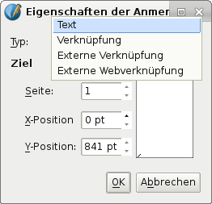
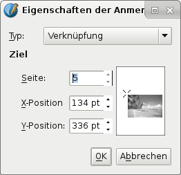
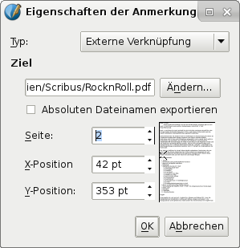
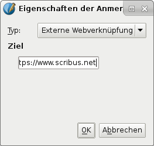

In diesem Kapitel geht es darum, wie man anklickbare Links in PDF-Dateien erstellt, die zu einer anderen Stelle im Dokument verlinken, zu einem anderen PDF oder auch in das Internet. Hier geht es nicht darum, Textrahmen zu verlinken, dies wird unter Textrahmen beschrieben.
Der einfachste Weg, ein Verknüpfungsfeld zu erstellen (und genau das wird hier gemacht), ist, in der Toolbar auf Link einfügen zu klicken (vorausgesetzt die PDF-Tools sind aktiviert – mit einem Rechtsklick auf die Toolbar sieht man, welche Elemente angezeigt werden). Das Icon sieht aus wie zwei Schuhabdrücke.
Jetzt kann man ein Rahmen-ähnliches Feld erstellen. Es ähnelt einem Textrahmen, und man kann sogar wie bei einem Textrahmen einen Text eingeben. Dafür mag es Gründe geben, um z.B. eine Referenz in Scribus zu haben, aber es wird keine der Rahmen-Eigenschaften später im PDF sichtbar sein! Das betrifft nicht nur den Text, sondern auch sämtliche Füll- oder Linienfarben. Man kann also in Scribus einen halbtransparenten Hintergrund machen, um zu sehen, wo das Link-Feld ist, dieser wird aber im PDF nicht sichtbar sein.
Tatsächlich sieht man z.B. im Adobe Reader nur, daß sich der Mauszeiger verändert, wenn man über ein klickbares Feld fährt – normalerweise eine Hand mit ausgestrecktem Zeigefinger. Dies kann leicht übersehen werden, so daß man gerne noch einen weiteren Hinweis hätte, der anzeigt, wo ein Link ist. Und vielleicht noch, wohin er führt. Dies kann alles sein, was man in einem Textfeld machen kann, z.B. ein Unterstrich oder eine andere Farbe. Zu erwähnen ist, daß das Link-Feld ein Rechteck bleibt, selbst wenn man die Form verändert. Es gibt also keinen Grund, dies zu tun.
|  | Links sieht man den Dialog, wenn man den Rahmen rechtsklickt und PDF-Optionen > Eigenschaften der Anmerkung wählt. Ganz oben im Dropdown-Menü sieht man Text. Damit erstellt man eine Popup-Anmerkung, die erscheint, wenn man im PDF mit der Maus über das Feld fährt – ein Doppelklick in das Feld läßt die Anmerkung dauerhaft erscheinen. Im PDF-Programm sieht man dann ein Symbol, das auf die Anmerkung hinweist. |
Man kann auch erst einen Textrahmen einfügen und diesen mit PDF-Optionen > Als PDF-Anmerkung verwenden zu einer Anmerkung machen und dann mit einem Rechtsklick wieder PDF-Optionen > Eigenschaften der Anmerkung aufrufen. Auch bei dieser Möglichkeit sind im PDF kein Inhalt oder sonstige Rahmeneigenschaften außer einer Popup-Anmerkung zu sehen.
|  | Wählt man Verknüpfung, kann man einen einzelnen Punkt auf einer bestimmten Seite als Ziel angeben. Wie hier gezeigt, sieht man eine Vorschau der Seite, um den Punkt genau festzulegen. Versuche haben ergeben, daß man z.B. bei einem Bild am besten einen Punkt knapp links oberhalb angibt, wenn man nach dem Verweis das ganze Bild sehen soll. Das ist natürlich vernachlässigbar, wenn die ganze Seite auf dem Monitor angezeigt wird. |
|  | Bei einer Externen Verknüpfung muß man erst ein PDF wählen, zu dem verwiesen wird. Danach kann man wie bei einer Verknüpfung einen Punkt auf einer bestimmten Seite angeben. Auch hier bekommt man eine kleine Vorschau, um das Linkziel festzulegen. |
|  | Wählt man Externe Webverknüpfung, erscheint ein Textfeld, in das man die URL eintragen kann. Bei z.B. dem Adobe Reader und Evince ist es im Gegensatz zu Okular nicht nötig, http:// anzugeben. Grundsätzlich ist es daher ratsam, die ganze URL einzugeben. Verlinkt man zu einer Datei (z.B. einer PDF) auf einer Webseite, gibt es nicht die Möglichkeit, eine bestimmte Seite zu bestimmen. Hier ist es auch möglich, einen mailto:-Link einzufügen, der beim Klick eine neue Mail mit der im To:-Feld angegebenen Mailadresse im Mailprogramm öffnet. |